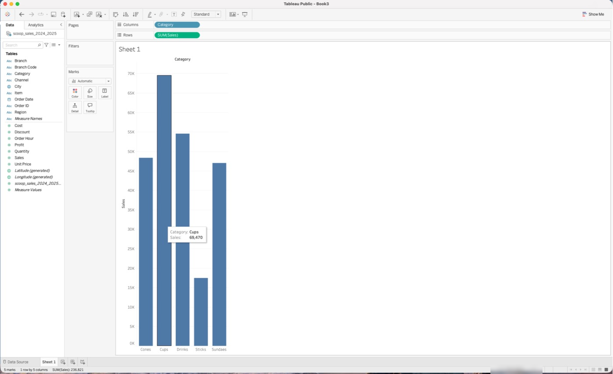
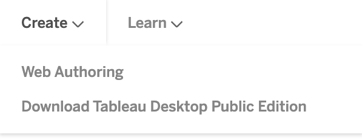
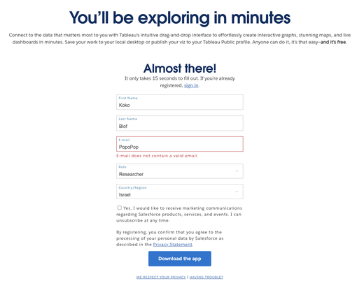
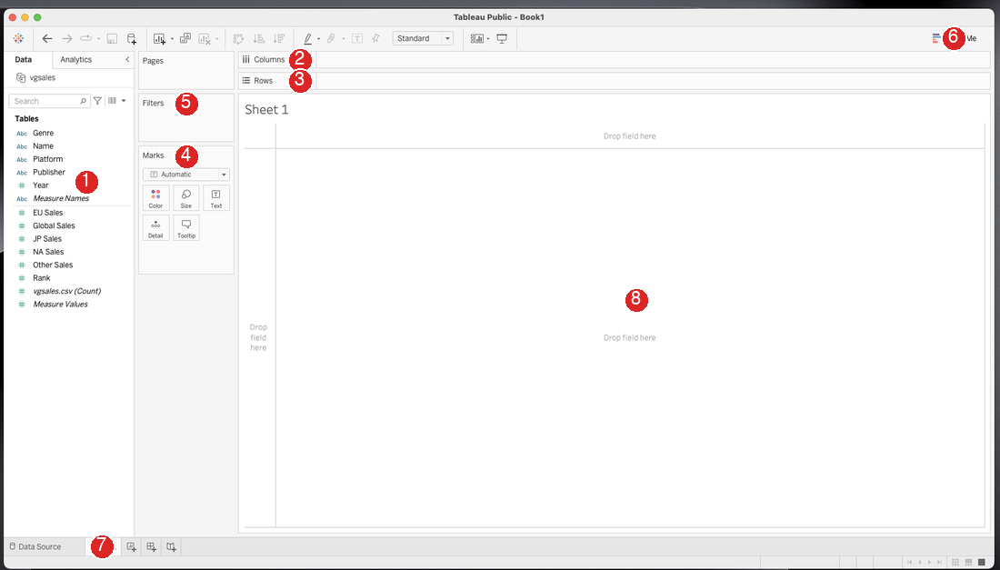
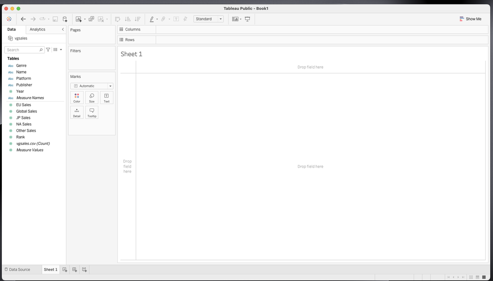
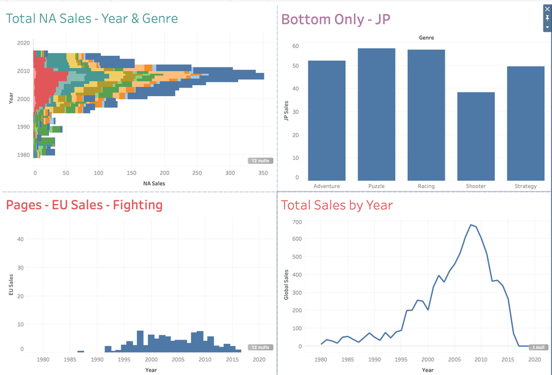

?teacher=1 בכתובת הדף: מה לומר, איפה לעצור ומה לבדוק לפני שממשיכים.בסוף המודול יש לכם על המחשב את Tableau Desktop Public Edition, חשבון Tableau Public פעיל, וחוברת הקורס: קובץ אחד בשם scoop-course.twbx שבו גיליון אחד, M1 Bars, עם גרף עמודות של מכירות Scoop & Go לפי קטגוריה. לאותה חוברת תוסיפו גיליונות בכל מודול, ותשמרו אותה עם File ואז Save. הגרף גם מפורסם בקישור, ואתם יודעים לפתוח אותו בחלון פרטי ולבדוק שהוא נראה לכולם. זה גרף קטן בכוונה. המטרה היא לוודא שכל החוליות עובדות: התקנה, חשבון, קובץ נתונים, שמירה ופרסום.
מה צריך לפני שמתחילים: מחשב עם Windows 10 או 11, או Mac עם macOS 13 ומעלה. כתובת מייל שאפשר לפתוח. הקובץ scoop_sales_2024_2025.csv שמור בתיקייה קצרה, בלי עברית ובלי רווחים בנתיב, למשל C:\Scoop או ~/Scoop. אין מודול קודם: זה המודול הראשון.
מה זה Tableau ולמה צריך אותו
מנהל הרשת של Scoop & Go רוצה לדעת איזו קטגוריה מכניסה הכי הרבה. הנתונים נמצאים בקובץ אחד, והוא כולל 6,575 שורות. אף אחד לא יקרא אותן שורה אחרי שורה.
הנה חמש שורות מתוך הקובץ, כמו שהן:
| Order_ID | Order_Date | Branch | Category | Item | Quantity | Sales |
|---|---|---|---|---|---|---|
| SG-00001 | 2024-01-01 | Haifa German Colony | Cups | Lemon Sorbet Cup | 2 | 40.0 |
| SG-00002 | 2024-01-02 | Eilat Promenade | Cups | Pistachio Cup | 1 | 24.0 |
| SG-00003 | 2024-01-02 | Tel Aviv Port | Drinks | Milkshake | 1 | 26.0 |
| SG-00004 | 2024-01-02 | Netanya Beach | Cones | Classic Cone | 1 | 16.0 |
| SG-00005 | 2024-01-03 | Tel Aviv Dizengoff | Cones | Double Cone | 1 | 26.0 |
ועכשיו אותו קובץ, כל 6,575 השורות, מסוכם לפי קטגוריה. חמש עמודות במקום אלפי שורות, ואפשר לראות מיד מי מוביל:

Category על Columns, SUM(Sales) על Rows, וחמש עמודות. העכבר על Cups, והטולטיפ מראה Category: Cups ו-Sales: 69,470. בשורת המצב למטה משמאל: 5 marks, 1 row by 5 columns, SUM(Sales): 236,821. את הגרף הזה תבנו בעצמכם בסעיף 7.איפה Tableau נמצא בדרך מנתונים להחלטה
Tableau לא אוסף נתונים ולא מנקה אותם. הוא בא אחרי שיש נתונים: מחברים אליו קובץ, וגוררים. כשהוויז מוכן, מפרסמים אותו בקישור. הנפשה קצרה:
- קודם יש נתונים: קובץ CSV או Excel, או טבלאות במסד נתונים.
- מכינים אותם: שאילתת SQL או עבודה ב-Excel. זה קורה מחוץ ל-Tableau Public.
- מחברים קובץ ל-Tableau, גוררים שדות, ובונים גרפים ודשבורד. כאן הקורס הזה נמצא.
- מפרסמים. מקבלים קישור אחד לוויז, ולא קובץ שנשלח במייל.
- מי שפותח את הקישור רואה, מסנן ומחליט. בשביל זה בנינו את הכול.
ומה עם Excel?
Excel הוא כלי מצוין לחישוב. Tableau נועד לדבר אחר: לחקור נתונים ולהציג אותם. הם משלימים זה את זה.
| מה רוצים | ב-Excel | ב-Tableau |
|---|---|---|
| לשנות את השאלה | בונים טבלת צירים או גרף חדשים, או משנים ידנית | גוררים שדה אחר למדף |
| כמה גרפים מאותם נתונים | כל גרף נשען על טווח או על טבלת צירים משלו | מקור נתונים אחד מזין הרבה גיליונות |
| גודל הנתונים | עד 1,048,576 שורות בגיליון (לפי Microsoft) | ב-Tableau Public עד 15 מיליון שורות בחוברת עבודה (נכון לאוקטובר 2026, בדקו בתיעוד) |
| שיתוף | שולחים קובץ, והוא מתיישן | שולחים קישור לוויז מפורסם |
| חישוב מדויק שורה אחרי שורה | זה החוזק של Excel | אפשרי, אבל זה לא מה שהכלי בנוי לו |
יש עוד כלים באותו תפקיד: Power BI של Microsoft ו-Looker Studio של Google. גם בהם מחברים נתונים, בונים גרפים ודשבורד ומשתפים. את ההבדלים המדויקים בין התכונות לא בדקנו לצורך הקורס, ולכן לא נשווה ביניהם כאן. מי שעבד במפגשים קודמים עם Looker Studio יזהה את הרעיון.
Tableau לא מחליף את SQL ולא את Excel. SQL שולף ומכין את הנתונים, Excel מחשב, ו-Tableau שואל שאלות ומראה תשובות. בקורס הזה אתם בעיקר בחוליה האמצעית, ומי שרוצה לראות את החוליה שלפניה יכול לפתוח את חלק ה-SQL במפגש המסכם.
בעבודה רגילה, אנליסט מכין את הנתונים ב-SQL או ב-Excel, ובונה ב-Tableau דשבורד. המנהל פותח את הדשבורד ושואל שאלות בלחיצות: איזה סניף, איזו שנה. הוא לא צריך לבקש מהאנליסט טבלה חדשה בכל פעם.
איפה Tableau נמצא ברצף העבודה?
המשפחה: Public, Free, Desktop ו-Cloud
מחפשים "Tableau download" בגוגל, ומקבלים כמה הורדות עם שמות דומים. רק אחת מהן מתאימה לקורס. בואו נסדר את השמות.
הטבלה הבאה היא המפה. היא נכונה נכון לאוקטובר 2026. השמות והמבצעים של Tableau משתנים, ולכן בדקו גם בדף הרשמי.
| השם | מה זה | עלות | מתאים לקורס? |
|---|---|---|---|
| Tableau Public public.tableau.com | האתר הציבורי: פרופילים, דף Discover עם ויזים של אחרים, אירוח של הוויזים שלכם, ועריכה בדפדפן | חינם | כן, שם מפרסמים |
| Tableau Desktop Public Edition | התוכנה החינמית שמתקינים ב-Windows או ב-Mac. שומרת במחשב או מפרסמת ל-Tableau Public | חינם, לא לשימוש מסחרי | כן, זו ההורדה |
| Web authoring | עריכת ויזים בתוך הדפדפן באתר, בלי התקנה. צריך חשבון | חינם | גיבוי, אם ההתקנה נכשלה |
| Tableau Desktop Free Edition | תוכנה חינמית נפרדת: אפשר להתחבר להרבה מקורות נתונים, בלי תקרת שורות, אבל אי אפשר לפרסם ל-Tableau Public | חינם | לא |
| Tableau Desktop (Professional) | התוכנה בתשלום. מפרסמת ל-Cloud ול-Server, וגם ל-Tableau Public | בתשלום, ברישיון | לא (אין לכם) |
| Tableau Cloud ו-Tableau Server | מקום פרטי של ארגון לוויזים, עם הרשאות לפי משתמש. Cloud מאוחסן אצל Tableau, Server אצל הארגון | בתשלום | לא |
Create בוחרים Web Authoring, ומעלים קובץ CSV או Excel.אז יש שלושה מצבי עבודה, ובקורס אנחנו עובדים בעיקר בראשון:
1. Desktop Public Edition
המצב הראשי של הקורס. מתקינים, שומרים במחשב, ומפרסמים כשרוצים.
2. Web authoring
גיבוי למי שלא יכול להתקין: Chromebook, Linux, מחשב נעול. במחשב נייד או נייח בלבד, לא בטלפון.
3. צפייה בלבד
פותחים ויז של מישהו אחר בדפדפן ומסתכלים. לא צריך להתקין שום דבר.
Public, Free ו-Professional זו לצד זו
שלוש התוכנות נראות דומה כשעובדים בהן, אבל הן שונות במה שאפשר להוציא החוצה. זו ההשוואה שהחברה עצמה מפרסמת:
| יכולת | Public Edition | Free Edition | Professional |
|---|---|---|---|
| שמירה מקומית | כן | כן | כן |
| פרסום ל-Tableau Public | כן | לא | כן |
| פרסום ל-Cloud או ל-Server | לא | לא | כן |
| מקורות נתונים | רשימה מוגבלת (קבצים ועוד) | כמעט הכול | הכול |
| מספר שורות | עד 15 מיליון | ללא הגבלה | ללא הגבלה |
| חיבור חי לנתונים | רק Google Drive | כן | כן |
מקור: דף ההשוואה הרשמי של Tableau (desktop_comparison), נכון לאוקטובר 2026. תוספת אחת שלא מופיעה בדף: בתוך Public Edition יש הודעות על מגבלה במספר החוברות החדשות שאפשר לשמור במחשב בתקופה מסוימת. בסעיף 8 נראה איך עובדים איתה בלי להרגיש אותה.
הכפתור הירוק. בדפים tableau.com/pricing ו-tableau.com/products/desktop מופיע כפתור גדול של הורדה חינמית. הוא מוריד את Free Edition, ולא את Public Edition. מי שהתקין אותה לא יראה אפשרות לשמור ל-Tableau Public, ולא יוכל לבצע את שלב הפרסום בקורס. הזיהוי: בתפריט File אין Save to Tableau Public. הפתרון: להסיר את התוכנה ולהתקין את ההורדה הנכונה, שמתחילה ב-public.tableau.com.
חמישה מצבים אמיתיים. לכל מצב בחרו את התשובה, ותקבלו הסבר.
כל מה שלומדים כאן עובד גם בעבודה. אותם Columns, Rows ו-Marks, אותם חישובים ואותם סוגי גרפים. ההבדל הוא איפה הנתונים נמצאים, מי רואה אותם ומי משלם. מה שנלמד ב-Tableau Public תופס גם ב-Tableau Cloud.
דרך פשוטה לזכור: Tableau Public הוא כמו יוטיוב, כל העולם רואה. Tableau Cloud הוא כמו תיקייה ארגונית, ורואה רק מי שקיבל הרשאה. בארגונים משלמים על רישיון לפי תפקיד: מי שבונה, מי שעורך ומי שרק צופה.
איזו תוכנה יכולה לפרסם ויז ל-Tableau Public?
איזה קובץ מורידים, ולמי הוא מתאים
סטודנט אחד מוריד את הקובץ הלא נכון, והשני מגלה בשיעור שהמחשב שלו בכלל לא נתמך. כדאי לבדוק את זה עכשיו, לפני שמורידים קובץ של כמעט גיגה.
מה המחשב צריך
- Windows: Windows 10 (64 סיביות) או Windows 11.
- Mac: macOS Ventura (גרסה 13) או חדשה יותר, עם מעבד Intel או עם שבב Apple silicon (M1 ומעלה).
- חיבור לאינטרנט, והרשאת מנהל (Administrator) להתקנה. במחשב עבודה נעול ייתכן שההתקנה תיחסם.
- זיכרון ומקום: הרשימה הרשמית מציינת 2GB זיכרון ב-Windows ו-4GB ב-Mac. לעבודה נוחה אני ממליץ על 8GB זיכרון ועל כ-5GB מקום פנוי בדיסק. זו המלצה שלי ולא דרישה רשמית.
- אין גרסה ל-Linux, ל-ChromeOS (Chromebook), לטלפון או לטאבלט. מי שיש לו רק אלה עובד ב-web authoring, במחשב נייד או נייח.
- ברשימה הרשמית מופיע רק Windows רגיל של 64 סיביות (x64). אם יש לכם מחשב Windows עם מעבד ARM, ההתקנה עלולה לא לעבוד, ובמקרה כזה עוברים ל-web authoring. עדיף לגלות את זה מוקדם.
- הקובץ גדול: בערך 0.6 עד 0.9GB (נכון לאוקטובר 2026). מורידים מראש, לא ברשת צפופה בכיתה.
ענו על השאלות, ובסוף תקבלו את שם הקישור שצריך ללחוץ עליו בדף ההורדה.
About This Mac. מה כתוב שם?איך מגיעים להורדה
נכנסים לאתר public.tableau.com, ובסרגל העליון לוחצים על Create. נפתחת רשימה קצרה. מה שמחפשים הוא Tableau Desktop Public Edition. בצילום שלמטה, הרשימה מציגה שתי אפשרויות. בגרסה העדכנית של האתר יש גם אפשרות שלישית, Published Data Sources עם תווית BETA, ושם הפריט הנכון עשוי להיות כתוב בלי המילה Download. בגרסה שלכם ייתכן שהשם שונה מעט, אבל המילים Desktop Public Edition יופיעו בו.

Create באתר public.tableau.com. הפריט השני מוביל להורדה של Public Edition. הצילום ישן מעט, ולכן ייתכן שיופיעו אצלכם פריטים נוספים.הלחיצה על הפריט מובילה לדף של tableau.com עם טופס קצר. אפשר גם להגיע ישר: tableau.com/products/public/download. בטופס מלאים שם פרטי ושם משפחה, תפקיד (Job role, בחרו Student אם זה מתאים), מדינה (Country/region) ומייל. תיבת הסימון על הודעות שיווקיות: אני ממליץ להשאיר אותה ריקה. לוחצים על הכפתור Download the app. מי שכבר רשום יכול ללחוץ על Sign in במקום למלא.

Download the app הוא מה שצריך לחפש.אחרי השליחה נפתח דף תודה עם שלושה קישורים: Windows, Mac (Intel) ו-Mac (Apple Silicon). זה המקום שבו המחשב שלכם קובע איזה קישור ללחוץ עליו, וההדמיה שלמעלה עזרה לכם להחליט. ההורדה אמורה להתחיל לבד, ואם לא, לוחצים על הקישור.
תרגיל: מוצאים את ההורדה הנכונה (בלי להוריד עדיין)
- פתחו דפדפן במחשב ולא בטלפון, והיכנסו ל-public.tableau.com. למה: בצג של טלפון תפריט Create מציג פחות אפשרויות, וייתכן שפריט ההורדה לא יופיע בכלל.
- לחצו על
Createבסרגל העליון וקראו את האפשרויות. למה: כאן רואים את ההבדל בין עריכה בדפדפן, הורדת תוכנה ומקורות נתונים מפורסמים. - לחצו על הפריט
Tableau Desktop Public Edition. למה: זה הפריט שמוביל לתוכנה שהקורס בנוי עליה. - בדף שנפתח, מצאו את הטופס ואת הכפתור
Download the app. עדיין אל תמלאו. למה: קודם פותחים חשבון, בחלק הבא. - בכרטיסייה אחרת פתחו את tableau.com/pricing ומצאו את הכפתור הירוק של ההורדה החינמית. אל תלחצו עליו. למה: כדי לזהות אותו בעתיד: הוא מוביל ל-Free Edition.
- אם יש לכם Mac: תפריט Apple ואז
About This Mac, וכתבו לעצמכם אם כתוב Chip או Processor. למה: זה קובע בין שני קישורי ה-Mac.
תוצאה צפויה: אתם רואים בטופס את הכפתור Download the app, ואתם יכולים לומר בלי להסתכל: "אני מוריד את Windows", או "את Mac (Apple Silicon)", או "את Mac (Intel)". הכפתור הירוק של הדף ששמו pricing אינו זה שאתם מחפשים.
חבר הוריד את התוכנה מהכפתור הירוק בדף המחירים. הוא אומר: "זה אותו Tableau, והכול חינם, אז מה אכפת". מה תענו לו, ואיזה שלב בקורס הזה ייתקע אצלו?
במקומות עבודה, מי שמתקין את Tableau הוא בדרך כלל מחלקת IT, לפי הרישיון של הארגון. את Public Edition אסור להפעיל לעבודה מסחרית. אז מה שהתקנתם בבית משמש ללימוד ולתיק עבודות, ולא לנתוני החברה.
ב-About This Mac כתוב Chip ואחריו Apple M2. איזה קישור לוחצים בדף ההורדה?
חשבון, התקנה והפעלה ראשונה
קודם פותחים חשבון, ואחר כך מתקינים. בלי חשבון אי אפשר לפרסם, ומייל ההפעלה אוהב להתחבא בספאם.
חשבון Tableau Public
החשבון חינמי, והוא משותף לאתר tableau.com ולאתר Tableau Public. מי שכבר יש לו חשבון ב-tableau.com, כנראה יכול להשתמש בו. החשבון נדרש כדי לפרסם ויזים ולעבוד ב-web authoring. להורדה עצמה מספיק למלא את הטופס, אבל נוח לפתוח חשבון עכשיו.
תרגיל: פותחים חשבון ומפעילים אותו
- היכנסו ל-public.tableau.com ולחצו
Sign Upבפינה העליונה. למה: כל פעולה של פרסום דורשת חשבון. - מלאו שם, מייל וסיסמה. השתמשו במייל שאתם בודקים באמת, ובסיסמה שאין לכם בשירות אחר. למה: מייל ההפעלה נשלח אליו.
- פתחו את המייל שהגיע מ-Tableau, ולחצו על קישור ההפעלה. אם אין מייל, בדקו בספאם ובלשונית ההודעות הפרסומיות. למה: הקישור תקף לאורך 48 שעות. אחרי כן אפשר לבקש מחדש דרך
Forgot password. - חזרו לאתר ולחצו
Sign In. היכנסו עם המייל והסיסמה. למה: כך אתם מוודאים שהחשבון פעיל לפני שצריך אותו בפרסום.
תוצאה צפויה: ההתחברות מצליחה, ואתם מגיעים לאזור שלכם באתר, כולל הפרופיל. אם האתר מבקש שוב ושוב להתחבר, קראו את המלכודת שמתחת.
האתר מבקש התחברות כל הזמן. לפי התיעוד של Tableau Public, מי שלא אישר עוגיות פונקציונליות (functional cookies) יתבקש להתחבר לעתים קרובות. אם זה קורה, פתחו את הגדרות העוגיות של האתר ואשרו את הפונקציונליות. ייתכן שזה קשור גם למקרים של "חלון לבן" בזמן הפרסום, שנראה בהמשך המודול.
התקנה
אחרי שההורדה הסתיימה:
Windows
- הריצו את קובץ ה-exe. ההתקנה דורשת הרשאת מנהל.
- במסך
Welcomeודאו שכתוב Tableau Desktop Public Edition, וסמנו שאתם מסכימים לתנאי הרישיון. - אם תרצו, סמנו
Don't send product usage data. - לחצו
Install.
אם Windows מציג אזהרה כחולה על קובץ שהורד, ואתם בטוחים שהוא ירד מהדף הרשמי, אפשר להמשיך דרך More info.
Mac
- פתחו את קובץ ה-dmg שירד.
- לחצו פעמיים על קובץ ה-pkg שבתוכו, והמשיכו עם
ContinueעדInstall. תתבקשו להקליד את סיסמת המחשב. - אם ה-Mac חוסם את הקובץ:
System Settings, אחר כךPrivacy & Security, גללו למטה ולחצוOpen Anyway. - פתחו את התוכנה מרשימת היישומים.
אפשר להתקין רק גרסה אחת של Public Edition בכל פעם. כדי לעדכן מתקינים את הגרסה החדשה, ואם ההתקנה מתלוננת, מסירים קודם את הישנה.
תרגיל: מתקינים, פותחים ובודקים מה יש לכם
- התקינו לפי הכרטיס של המערכת שלכם, והפעילו את Tableau Public. למה: כך מוודאים שההתקנה הושלמה.
- אם התבקשתם להתחבר, התחברו עם החשבון שפתחתם. אם לא התבקשתם, זה בסדר: ההתחברות תידרש בפרסום. למה: החשבון נחוץ רק כשמעלים לאתר.
- במסך הפתיחה, באזור
Connect, ספרו את הפריטים שתחתTo a File. למה: זה כל מה ש-Tableau Public יודע לקרוא מקבצים במחשב. - קראו את הפריטים שתחת
To a Server. למה: כאן רואים שאין מסדי נתונים ברשימה. - מצאו את מספר הגרסה: ב-Windows בתפריט
HelpואזAbout Tableau. ב-Mac ייתכן שהפריטAbout Tableauנמצא בתפריטTableau Public, שליד סמל התפוח. רשמו את המספר. למה: קובץ שנשמר בגרסה חדשה לא נפתח בגרסה ישנה, ולכן כדאי שלכולם בכיתה תהיה אותה גרסה.
תוצאה צפויה: תחת To a File יש שישה פריטים: Microsoft Excel, Text file, JSON file, PDF file, Spatial file ו-Statistical file. תחת To a Server יש שניים: OData ו-More.... הצילומים באתר הזה צולמו בגרסה 2026.2.3 ב-Mac. אם הגרסה שלכם ישנה ממנה, עדכנו לפני שמתחילים, כדי שהמסכים ייראו כמו כאן.
והנה מה שעשוי להשתבש בהתקנה, ומה עושים:
| מה קורה | הסיבה | מה עושים |
|---|---|---|
| Mac: ההודעה "Verifying" לא נגמרת | בדיקת האבטחה של macOS | בחרו את קובץ ה-pkg ופתחו אותו בלחיצה ימנית (או Control ולחיצה) עם Open. בגרסאות macOS חדשות עדיף Open Anyway דרך Privacy & Security |
| Mac: "cannot be opened because the developer cannot be verified" | macOS חוסם תוכנה שהורדה | נסו לפתוח פעם אחת, ואז System Settings, Privacy & Security, Open Anyway |
| Windows: ההתקנה מבקשת הרשאה או נעצרת בשגיאת הרשאות | נדרשת הרשאת מנהל | היכנסו כמנהל, או בקשו מ-IT. במחשב נעול, עברו ל-web authoring |
| ההורדה נכשלת, מפות ריקות או הפרסום נכשל | חומת אש או שרת proxy של הרשת | נסו רשת אחרת, למשל נקודה חמה מהטלפון. התקשורת עוברת בפורטים 80 ו-443 |
| לא הגיע מייל הפעלה | ספאם, או שגיאת הקלדה במייל | בדקו ספאם, ובקשו שוב דרך Forgot password |
| הורדתם Mac (Intel) ויש לכם Apple Silicon, או להפך | בחירה שגויה בדף ההורדה | About This Mac, ובחרו מחדש את הקישור הנכון |
הממשק באנגלית, והנתונים בכל שפה
Tableau Public מגיעה בכמה שפות, אבל עברית אינה ביניהן. גם אם המחשב שלכם בעברית, התפריטים והשדות יהיו באנגלית. לכן בקורס אני כותב כל שם של תפריט או מדף באנגלית, בתוך קוד, ולידו הסבר בעברית. הנתונים עצמם יכולים להיות בכל שפה, כולל עברית, כי התוכנה תומכת ב-Unicode.
גרסה חדשה ויזים ישנים. קובץ שנשמר בגרסה חדשה של Tableau לא ייפתח בגרסה ישנה יותר. מקבלים הודעה שהקובץ נוצר בגרסה חדשה, והפתרון הוא לעדכן את ההתקנה. לכן בקורס מחליפים קישורים של ויזים מפורסמים, ולא קבצים, ושומרים את אותה גרסה לאורך הקורס. מספר הגרסה מתעדכן כמה פעמים בשנה. את מספר הגרסה שלכם מוצאים בפריט About Tableau: ב-Windows בתפריט Help, וב-Mac כנראה בתפריט Tableau Public שליד סמל התפוח.
החשבון אינו מנגנון כניסה לתוכנה. הוא המפתח לפרסום. אפשר לעבוד שעות עם הנתונים שלכם בתוכנה ובלי חשבון פעיל, ולשמור הכול במחשב. רק כשרוצים להעלות לאתר, התוכנה מבקשת להתחבר.
מי שעובד בצוות עם Tableau בודק תמיד שלכולם אותה גרסה. קובץ ששמרה אחת הקולגות בגרסה חדשה לא ייפתח אצל מי שלא עדכן. זו אחת הסיבות שצוותים מתאמים עדכונים.
למה כדאי להוריד, להתקין ולהפעיל את החשבון יום לפני השיעור, ולא בתחילת השיעור? תנו שתי סיבות.
ההתקנה ב-Windows נעצרת בשגיאת הרשאות. מה הצעד הנכון?
מסך הפתיחה, הגיליון ותפריט File
עוד לפני שבונים משהו, כדאי לדעת איפה נמצא כל דבר. אין כאן מה לשנן: רק לזהות שלושה מקומות, ואז לחזור אליהם בהמשך.
מסך הפתיחה
1Connect
To a File2Open
3Discover
Connect: מחברים קובץ נתונים. כל מה שמופיע תחתTo a Fileהוא קובץ במחשב, ותחתTo a Serverמקורות מרחוק. ב-Tableau Public הרשימה מוגבלת, וסעיף 10 מסביר למה.Open: חוברות עבודה שפתחתם לאחרונה, והקישור לפתיחת חוברת שמורה.Discover: דוגמאות מוכנות מהאתר, כדי לקבל השראה.
זו תבנית, ולא צילום מדויק. הנה הצילום האמיתי של האזור השמאלי, מהתוכנה עצמה:

Connect בתוכנה. שימו לב: אין כאן מסדי נתונים כמו SQL Server. את המגבלה הזו נבין בסעיף 10.הגיליון, והמקום שבו בונים
אחרי שמחברים קובץ, Tableau פותח קודם את דף הנתונים, ובו אתם מסתכלים על הטבלה. כדי לצייר עוברים ללשונית הגיליון.
Sheet 1 עם גרף עמודות.
Data pane(חלונית הנתונים, הלשוניתData): רשימת כל השדות בקובץ, תחת הכותרתTables. שדות הטקסט והתאריכים נמצאים למעלה (סמל Abc), והמספרים מתחת לקו הדק (סמל #). אין כותרות נפרדות של Dimensions ו-Measures: הקו הדק הוא ההפרדה.Columns: מה מונח על הציר האופקי.Rows: מה מונח על הציר האנכי.Marks: הכרטיס שקובע איך הסימנים נראים: צבע, גודל, תווית, פירוט ו-Tooltip.Filters: המקום שבו מסננים החוצה שורות.Show Me: כפתור שמציע סוגי גרפים לפי השדות שבחרתם.- לשוניות הגיליונות למטה:
Data Source(הטבלה) ו-Sheet 1(הגיליון). - אזור הציור: כאן מצטייר הגרף.
המודולים 3 עד 5 יסבירו את כל זה לעומק. כרגע מספיק שאתם יודעים לפנות אל האזור הנכון.
זה גיליון אמיתי בלי סימונים. לחצו על האזור שמבקשים, ותקבלו משוב מיד.

"אני רואה רק טבלה ואין גרף." אחרי שמחברים קובץ, Tableau נפתח בדף הנתונים (Data Source), והוא מציג טבלה. הגרף נבנה בלשונית Sheet 1 שבתחתית המסך. מי שמחפש את המדפים Columns ו-Rows בדף הנתונים לא ימצא אותם. הכלל: דף הנתונים הוא לבדוק את הנתונים, והגיליון הוא לצייר.
תפריט File: מה נשמר איפה
בתפריט File יש שני סוגי שמירה שנראים דומים. אחד שומר במחשב שלכם, והשני שולח את החוברת לאתר ציבורי. ההבדל הוא בשם, וגם בקיצור המקשים.

File ב-Mac. שימו לב: ליד Save אין קיצור מקשים, ואילו הקיצור ⌘S שייך ל-Save to Tableau Public.... גם כפתור הדיסקט בסרגל הכלים נקרא בריחוף Save to Tableau Public (⌘S).| הפריט | מה הוא עושה | איפה זה נשמר |
|---|---|---|
Save | שומר את החוברת הפתוחה, באותו שם ובאותו מקום. בלי קיצור מקשים, בוחרים מהתפריט | במחשב שלכם |
Save As... | שומר חוברת בשם ובמקום שתבחרו. בקורס משתמשים בו פעם אחת, כדי ליצור את חוברת הקורס | במחשב שלכם |
Export Packaged Workbook... | יוצר קובץ אחד שכולל גם את הנתונים (twbx) | במחשב שלכם |
Save to Tableau Public... (⌘S) ו-Save to Tableau Public As... (⇧⌘S) | שולחים את החוברת ואת הנתונים לאתר | ב-Tableau Public, ציבורי |
Open... | פותח חוברת מהמחשב | - |
Open from Tableau Public... | פותח חוברת שפרסמתם באתר | - |
Manage My Profile... | פותח את הפרופיל שלכם באתר | - |
Show Start Page | חוזר למסך הפתיחה | - |
הקיצור שאתם רגילים אליו מפרסם. בכל תוכנה אחרת Cmd+S (או Ctrl+S) שומר במחשב. ב-Tableau Public הקיצור הזה, וגם כפתור הדיסקט בסרגל הכלים, פותחים את השמירה ל-Tableau Public. כדי לשמור במחשב בוחרים בתפריט: File ואז Save. הצילומים כאן מ-Mac. ב-Windows העבירו את העכבר מעל כפתור הדיסקט וקראו מה כתוב, ואז תדעו מה הקיצור עושה אצלכם.
תרגיל: מפת השמירה בתפריט File
- במסך הפתיחה כתבו לעצמכם שם אחד לכל אזור:
Connect,Open,Discover. למה: כדי לדעת מאיפה מתחילים. - פתחו את התפריט
Fileוספרו את הפריטים ששומרים במחשב:Save,Save As...,Export Packaged Workbook.... אל תלחצו על אף אחד. למה: אלה העותקים המקומיים שלכם. - באותו תפריט ספרו את הפריטים ששולחים לאתר:
Save to Tableau Public...ו-Save to Tableau Public As.... מצאו גם אתManage My Profile.... למה: אלה העותקים הציבוריים. אין עדיין מה לפרסם, אבל כדאי לדעת איפה הם לפני שצריך אותם. - קראו איזה קיצור מקשים רשום ליד
Saveואיזה לידSave to Tableau Public.... למה: כדי לא לפרסם בטעות בלחיצה על הקיצור הרגיל של שמירה. - פתחו את
Help, אחר כךSettings and Performance, ובדקו אםEnable Autosaveמסומן. למה: שמירה אוטומטית מצילה עבודה כשהתוכנה נסגרת לא כשורה. - באזור
Connectלחצו עלMore...וקראו את הרשימה. סגרו בלי לבחור. למה: לראות אילו מקורות נוספים Public מציעה.
תוצאה צפויה: שלושה פריטים מקומיים, שניים ציבוריים ופריט פרופיל אחד. ליד Save אין קיצור, וליד Save to Tableau Public... כתוב ⌘S (ב-Mac). Enable Autosave מסומן כברירת מחדל. ב-More... אין מסדי נתונים כמו SQL Server או Oracle.
ועוד דבר שכדאי לדעת כבר עכשיו: ב-Tableau Public יש הגבלה על מספר החוברות החדשות שאפשר לשמור במחשב בתקופה מסוימת. לפי ההודעות שבתוכנה, עריכה ושמירה חוזרת של אותה חוברת לא מוגבלות. לכן בקורס הזה יש חוברת אחת, שיוצרים בסעיף 7 ושומרים שוב ושוב.
מסלול מקביל למדריך הרשמי
ל-Tableau יש מדריך רשמי למתחילים בשמונה שלבים, Get Started with Tableau Desktop. הוא עובד על נתוני הדוגמה Sample - Superstore, חנות בדיונית, ולא על Scoop & Go. מי שרוצה ללכת בו במקביל לאתר הזה יכול: בכל מודול שבו נוגעים בשלב מהמדריך יש תיבה כמו זו.
שלב 1 במדריך: מתחברים לנתונים. הקובץ מגיע עם התוכנה. בהתקנה שבדקנו (Mac, גרסה 2026.2) הוא הועתק לתיקייה Documents/My Tableau Repository/Datasources/2026.2/en_US-APAC. שם התיקייה האחרונה תלוי באזור שלכם. הדרך:
- אם באזור
Connectמופיע אצלכםSaved Data SourcesובוSample - Superstore, לחצו עליו. למה: זו הדרך שהמדריך מתאר. - אם לא, לחצו
Microsoft Excel, היכנסו לתיקייה שלמעלה ובחרו Sample - Superstore.xlsx. למה: זה אותו קובץ, רק בלי הקיצור. - בדף הנתונים גררו את הגיליון
Ordersלקנבס, אם הוא עוד לא שם, וקראו את שורת הסיכום. למה: אותה בדיקת שורות שעושים עם Scoop & Go.
נקודת בדיקה: בקובץ שמגיע עם התוכנה, בגיליון Orders, יש 21 עמודות ו-10,194 שורות, עם הזמנות מ-2023 עד 2026 (חישבנו מהקובץ עצמו). אם חיברתם דרך Microsoft Excel, שורת הסיכום אמורה להראות 21 fields 10194 rows. דרך Saved Data Sources מספר השדות עשוי להיות גדול יותר, כי מקור שמור מגיע עם שדות שהוגדרו בו מראש. בצילומים שבמדריך הרשמי ייתכן שתראו שנים אחרות. ושימו לב: המדריך מדבר היום על Tableau Desktop Free Edition. אתם עובדים ב-Public Edition, ורוב הצעדים זהים. ההבדל הגדול הוא בשמירה ובפרסום.
הסידור של המסך הוא תמונה של הדרך לחשוב: מצד שמאל הנתונים, באמצע מורכבים את הגרף, ובצד אחר מתקנים את המראה. כל ויז ב-Tableau נבנה מאותה פעולה: לוקחים שדה מהחלונית השמאלית, ומניחים אותו על מדף.
אנליסטים מנוסים עובדים הרבה עם קיצורי מקשים, אבל כולם התחילו בדיוק כאן: לדעת איפה כל אזור. מי שמכיר את הסידור קורא ויז של מישהו אחר ומבין מהר מה הונח על כל ציר.
אתם רוצים לצייר גרף. איפה גוררים את השדות?
קוראים ויז: סימנים, טולטיפ ומסננים
קוראים לפני שבונים. מי שיודע לקרוא ויז של מישהו אחר, יבנה ויז טוב יותר. בואו נראה מה יש בכל ויז, ואז נפתח אחד אמיתי באתר.
וגם מסנן. מסנן (filter) הוא הדרך לראות רק חלק מהשורות. נתאמן על שלושתם בעוד רגע. קודם, איך נראה הנתון שמאחורי כל סימן:
- הקובץ הוא טבלה של שורות. כאן רואים חמש מתוך 6,575.
- Tableau מקבץ את השורות לפי Category. לכל קבוצה יש צבע.
- לכל קבוצה הוא מחשב סכום של Sales, על כל השורות שלה ולא רק על החמש שמוצגות.
- כל סכום הופך לסימן אחד. חמש קטגוריות, חמישה סימנים.
- כשמצביעים על סימן, הטולטיפ מציג את מה שמאחוריו: הקטגוריה והסכום.
עכשיו אתם. זה ויז קטן שנבנה בדפדפן מהנתונים האמיתיים של Scoop & Go. זו הדמיה, ולא Tableau עצמו, אבל ההתנהגות דומה. נסו שלוש פעולות: להצביע על עמודה, ללחוץ על עמודה, ולסנן אזור.
1 הצבעה2 לחיצה3 סינון

התווית האפורה, כמו 12 nulls, אומרת: יש שורות שאי אפשר לצייר, כי חסר בהן ערך. בקובץ הזה, שנת ההוצאה של משחקים מסוימים חסרה. Tableau לא מסתיר את זה, והוא מזכיר לכם שנתונים חסרים. נטפל בזה במודול 2.
חמש שאלות לקריאת ויז
תרגיל: מטיילים ב-Discover וקוראים ויז
- היכנסו ל-public.tableau.com/app/discover. למה: זה דף הגילוי של האתר, ובו ויזים של אנשים אחרים.
- בחרו ויז אחד שמעניין אתכם, ופתחו אותו. אל תחפשו את המושלם: כל ויז מתאים. למה: המטרה היא לתרגל קריאה.
- המתינו שייטען, וענו בכתב על חמש השאלות מהמסגרת למעלה: מה הכותרת, מה על הצירים, מה הסימנים, אילו מסננים, מה חסר. למה: קריאה מסודרת מונעת טעויות.
- הצביעו על שלושה סימנים שונים וקראו את הטולטיפ. לחצו על סימן אחד, ואז לחצו ברקע הגרף כדי לבטל את הבחירה. למה: כך רואים את הערכים המדויקים, ואת איך הסימן קשור לשאר.
- אם יש בוויז מסנן או רשימה נפתחת, שנו ערך אחד וראו מה משתנה. למה: ויז אינטראקטיבי מראה תשובות שונות לפי הבחירה.
- הסתכלו בשורת הכלים של הוויז (ייתכן שהיא מעל הוויז או מתחתיו), ומצאו את הכפתורים
Shareו-Download. למה: נחזור אליהם בסעיף 8 ובסעיף 9.
תוצאה צפויה: יש לכם בכתב שורה אחת: "הגרף הוא ___, הוא עונה על השאלה ___, והקהל הוא ___", וגם הצלחתם לעשות שלוש פעולות: להצביע, ללחוץ ולשנות מסנן. נקודה אחת להמשך: כפתור Download קיים בדרך כלל בכל ויז ציבורי.
רשות: אפשר ללחוץ על Download ולבחור את סוג הקובץ של חוברת העבודה, ואז לפתוח אותו ב-Tableau דרך File ואז Open.... אם התוכנה מודיעה שהקובץ נוצר בגרסה חדשה יותר, מעדכנים את ההתקנה (ראו הסעיף על גרסאות).
הטולטיפ הוא הדרך לראות מה באמת מאחורי סימן. הציר מעוגל ומוגבל, ואילו הטולטיפ מראה את המספר המדויק. כשיש ספק בגרף, מצביעים.
מספר בלי יחידה. בגרף של vgsales שבדשבורד למעלה, הקו של Total Sales by Year מגיע בשנת 2008 לכ-678.9. אלה מיליוני עותקים, ולא שקלים ולא דולרים. התיעוד של חבילת הנתונים אומר זאת, והגרף לא. לפני שמצטטים מספר, מחפשים את היחידה. בקובץ Scoop & Go אין עמודת מטבע, ולכן כשמסכמים מכירות כותבים תמיד "סכום המכירות בקובץ".
המסנן שלא רואים. ויז יכול להיות מסונן בלי שמוצג כפתור סינון. הסכומים שרואים הם של השורות שנשארו, ולא של כל הקובץ. אם מספר נראה קטן, בדקו אם יש מסנן פעיל, בכותרת, בהערות או במסנן שמוצג. לכן שאלה (4) נמצאת ברשימה.
מנתחי נתונים ועיתונאים קוראים ויז בצורה כזאת בכל פעם שמישהו מראה להם גרף בישיבה. אחת הדרכים להתאמן: Tableau Public בוחרת בדרך כלל ביום חול ויז אחד כ-Viz of the Day, והוא מופיע בדף Discover. כדאי לפתוח אחד ולקרוא אותו לפי חמש השאלות.
מראים לכם גרף עמודות יפה. אין כותרת, אין יחידות, ואין שום סימן למסנן. אילו שלוש שאלות תשאלו לפני שתאמינו למספרים בו?
הצבעתם על העמודה Cups, והטולטיפ מציג SUM(Sales) בערך 69,470. מה המספר הזה?
בפינה של ויז מופיעה תווית אפורה: "12 nulls". מה זה אומר?
הויז הראשון: מחברים קובץ ומציירים עמודות
עכשיו בונים משהו. זה לא שיעור בגרפים, אלא בדיקה שכל החוליות עובדות: מחברים קובץ, מציירים עמודות, שומרים ופותחים מחדש. את הגרפים עצמם נלמד במודולים הבאים.
הנתונים של הקורס: Scoop & Go
Scoop & Go היא רשת גלידריות בדיונית לגמרי, עם תשעה סניפים בשמונה ערים. הקובץ מכיל 6,575 שורות, מ-1 בינואר 2024 עד 31 בדצמבר 2025. כל שורה היא פריט שנמכר בהזמנה. הנתונים נוצרו על ידי תוכנית, וכל דמיון למציאות מקרי. זה בדיוק מה שמתאים לפרסום ציבורי: אין בהם אדם אמיתי.
הורידו את הקובץ: scoop_sales_2024_2025.csv. יש גם גרסת Excel, scoop_sales_2024_2025.xlsx, עם גיליון Sales וגיליון Branches. במודול הזה נשתמש ב-CSV.
| Field | Example | Meaning |
|---|---|---|
| Order_ID | SG-00001 | Order line id |
| Order_Date | 2024-01-01 | Date |
| Order_Hour | 19 | Hour of the day |
| Branch_Code, Branch | BR04, Haifa German Colony | Branch id and name (9 branches) |
| City, Region | Haifa, North | 8 cities; regions: Center, South, Jerusalem, North |
| Channel | Walk-in | Walk-in, App or Delivery |
| Category, Item | Cups, Lemon Sorbet Cup | 5 categories, 15 items |
| Quantity, Unit_Price | 2, 20 | Units and price per unit |
| Discount | 0.0 | 0, 0.1, 0.2 or 0.5 |
| Sales, Cost, Profit | 40.0, 17.0, 23.0 | Sales is after discount; Profit = Sales - Cost |
שמרו את הקובץ בתיקייה קצרה, בלי עברית ובלי רווחים בנתיב, למשל C:\Scoop או ~/Scoop. זה מונע בעיות מיותרות.
קודם מתנסים במיני Tableau
לפני שעושים את זה בתוכנה האמיתית, נסו את אותה פעולה במיני Tableau שבדף. זו הדמיה של Tableau, ולא התוכנה עצמה. גוררים שדה מהרשימה שמשמאל אל המדף, והגרף מצטייר מיד.
ועוד אחד, עם שאלה חדשה: איזה סניף מוכר הכי הרבה? שינוי השאלה פירושו שדה אחר על המדף:
בדיקה: ב-Branch יש 9 סימנים. הגבוה ביותר הוא Tel Aviv Dizengoff עם 44,194.1, והנמוך הוא Ashdod Beach Pop-up עם 5,304.5.
Columns, והכדור Sales שעל Rows. שימו לב שהכדור השני נקרא SUM(Sales), כי Tableau מסכם אותו לבד.כחול וירוק: הצבע של הפיל אומר איך Tableau מתייחס לשדה, ולא אם הוא טקסט או מספר. כחול הוא בדיד, וירוק הוא רציף. מודול 4 מוקדש לזה, ועכשיו מספיק לשים לב.
כך נראה דף הנתונים אחרי שמחברים את הקובץ של הקורס. זה צילום אמיתי:

Data Source) עם Scoop & Go. מעל הטבלה, משמאל, כתוב 16 fields 6575 rows: כמה שדות וכמה שורות יש בקובץ. מימין לזה התיבה 100 ואז rows: כמה שורות מוצגות בתצוגה המקדימה. למטה משמאל רשימת השדות עם הסוג של כל אחד, ומימין הטבלה עצמה. בתחתית הלשוניות Data Source ו-Sheet 1.תרגיל: מחברים את הקובץ, בונים עמודות ויוצרים את חוברת הקורס
- במסך הפתיחה, באזור
ConnectתחתTo a File, לחצוText file. למה: CSV הוא קובץ טקסט. הפריטMicrosoft Excelמיועד לקבצי xlsx. - בחרו את scoop_sales_2024_2025.csv ולחצו
Open. למה: כך Tableau קורא את הקובץ ויוצר מקור נתונים. - הסתכלו על דף הנתונים (
Data Source). מתחת לאזור העליון, ליד הטבלה, מופיע סיכום של מספר השדות והשורות. למה: לפני שמציירים בודקים שהקובץ נטען שלם. - לחצו על הלשונית
Sheet 1בתחתית המסך. למה: בגיליון בונים את הגרף. - מתוך ה-
Data paneגררו אתCategory(סמל Abc) אל המדףColumns. למה: הקטגוריות ייצרו את הכותרות של העמודות. - גררו את
Sales(סמל #) אל המדףRows. למה: הסכום מצויר כגובה העמודות. שימו לב שהפיל נקרא SUM(Sales). - הצביעו על העמודה Cups וקראו את הטולטיפ, ואחר כך את שורת המצב בתחתית החלון משמאל. למה: כדי לאמת שהמספר שבגרף הוא מה שציפיתם, ושיש בגרף כמה סימנים שציפיתם.
- קליק ימני על הלשונית
Sheet 1, בחרוRenameוהקלידו M1 Bars. למה: בחוברת הקורס יהיו עשרות גיליונות, ושם עם מספר המודול עוזר למצוא כל אחד. - שמרו במחשב, מהתפריט:
File, אחר כךSave As.... בחרו את התיקייה שלכם, בשם scoop-course, ואם יש בחלון בחירה של סוג קובץ, בחרו חוברת עבודה ארוזה (.twbx, Tableau Packaged Workbook). אם אין, השתמשו ב-Export Packaged Workbook.... למה: זו הפעם היחידה בקורס שיוצרים חוברת מקומית חדשה. מעכשיו שומרים אותה רק עםFileואזSave. קובץ twbx כולל את הנתונים, ולכן הוא נפתח בכל מחשב. - סגרו את Tableau, פתחו אותו מחדש ופתחו את הקובץ שנשמר (
File,Open..., או לחיצה כפולה על הקובץ). למה: כך בודקים שהשמירה באמת עובדת.
תוצאה צפויה:
- בדף הנתונים: 16 fields 6575 rows. השורה הראשונה בטבלה היא SG-00001, בסניף Haifa German Colony, ובסכום 40. התאריך מוצג לפי הגדרות האזור במחשב: בצילום ב-Mac הוא 01/01/2024. ליד
Order Dateיש סמל של לוח שנה, ולידCityסמל של גלובוס. - בגיליון: חמש עמודות, לפי סדר האלף-בית: Cones, Cups, Drinks, Sticks, Sundaes. העמודה הגבוהה היא Cups, והנמוכה היא Sticks. בדיוק כמו בצילום שבסעיף 1.
- בטולטיפ של Cups: Category: Cups ו-Sales: 69,470. שאר הסכומים: Cones 48,317, Drinks 54,553.3, Sticks 17,443.4, Sundaes 47,037.2. Tableau מציג אותם מעוגלים (למשל 54,553), בלי הנקודה העשרונית.
- בשורת המצב: 5 marks, 1 row by 5 columns, SUM(Sales): 236,821.
- אחרי השמירה ייתכן שיופיע חלון קטן בשם
Workbook Saved Locally. אחרי הפתיחה מחדש: לשונית בשם M1 Bars, אותו גרף, אותם חמישה סימנים.
בדיקת סכום: חמש העמודות מסתכמות ל-236,820.9. זה סך המכירות בקובץ, ונשתמש בו כנקודת בדיקה במודולים הבאים.
הגרף הקטן הזה הוא מה שנפרסם בסעיף הבא.
פתחתם CSV דרך Microsoft Excel. הפריט Microsoft Excel ב-Connect מיועד לקבצי xlsx. לקובץ CSV בוחרים Text file. אם קבצים אחרים לא נפתחים, בדקו קודם את סוג הקובץ.
"בטבלה רואים רק 100 שורות." בדף הנתונים הטבלה מציגה רק תצוגה מקדימה של השורות הראשונות. בצילום של דף הנתונים שלמעלה מופיע ליד הטבלה שדה עם המספר 100. מספר השורות האמיתי הוא זה שבסיכום שליד השדות: fields ו-rows. הוא מתייחס לכל הקובץ.
המספרים שכתובים בתוצאה הצפויה הם נקודת הבדיקה שלכם. אם בגרף שלכם Cups הוא לא 69,470, אל תמשיכו הלאה: משהו בקובץ או בחיבור שונה. כך נתפסות שגיאות מוקדם, ולא אחרי שבונים דשבורד שלם.
אנליסטים משווים תמיד את מספר השורות ואת סכום הבקרה אל המקור, לפני שמציירים. אם הקובץ מגיע ממסד נתונים, בודקים שמספר השורות זהה לתוצאה של השאילתה. זה צעד של כמה שניות שמונע דיווח שגוי.
בקובץ יש 6,575 שורות, וחמש העמודות מסתכמות ל-236,820.9. למה לא מופיע בגרף המספר 6,575?
אחרי חיבור הקובץ scoop_sales_2024_2025.csv, מה אמור להופיע בדף הנתונים?
שמירה במחשב מול פרסום באתר
שמירה במחשב ופרסום באתר הם שני דברים שונים לגמרי. אחד נשאר אצלכם, והשני עולה לאינטרנט. כאן עושים את שניהם, ובודקים שהקישור באמת נפתח לכל אחד.
שמירה במחשב
- Tableau Public שומרת אוטומטית, כל כמה דקות, כברירת מחדל. ההגדרה נמצאת בתפריט
Help, תחתSettings and Performance, בפריטEnable Autosave. אם התוכנה נסגרת לא כשורה, בפתיחה הבאה מופיע חלוןFile Recoveryעם העותק ששוחזר. - Tableau Public יוצרת בתוך Documents תיקייה בשם My Tableau Repository, ובה התיקייה Workbooks. אפשר לשמור שם או בכל מקום אחר.
- שמירה במחשב מתאימה גם לנתונים פרטיים. מה שלא מפרסמים, נשאר אצלכם.
הרגל שמירה לכל הקורס
ב-Tableau Public מספר החוברות החדשות שאפשר לשמור במחשב מוגבל בתקופה מסוימת. התוכנה מודיעה על זה כשמתקרבים לקצה, והמספרים נקבעים אצל Tableau ועשויים להשתנות, ולכן לא נכתוב אותם כאן. מה שחשוב: לפי ההודעות שבתוכנה, שמירה חוזרת של חוברת קיימת לא מוגבלת. אז עובדים כך:
- חוברת אחת לכל הקורס: scoop-course.twbx, שיצרתם בסעיף 7. בכל מודול מוסיפים לה גיליונות עם שם שמתחיל במספר המודול, למשל M3 Category.
- שומרים עם
FileואזSave, ולא עםSave As.... כך זו אותה חוברת, ולא חוברת חדשה. - לא לוחצים ⌘S או Ctrl+S מתוך הרגל, וגם לא על כפתור הדיסקט. אלה פותחים את השמירה ל-Tableau Public.
- ניסוי מהיר? לא שומרים אותו. פותחים חוברת חדשה (
FileואזNew), מנסים וסוגרים בלי לשמור. חוברת שלא נשמרה לא נספרת. - פרסום הוא משהו נפרד:
Save to Tableau Public As...מעלה עותק לאתר, ולא נוגע בקובץ שבמחשב.
פרסום ל-Tableau Public
הנפשה שמראה מה בדיוק קורה:
- על המחשב יש חוברת עבודה, וקובץ הנתונים שלה.
- בוחרים File, ואז Save to Tableau Public As..., מתחברים וכותבים שם לוויז.
- לאתר עולים שני דברים: הוויז, ועותק (extract) של הנתונים.
- האתר נותן כתובת קבועה לוויז.
- כל מי שיש לו את הכתובת רואה את הוויז, מסנן, ובדרך כלל גם יכול להוריד אותו עם הנתונים.
- אם אחר כך משנים את ה-CSV שבמחשב, הוויז באתר נשאר כמו שהוא. כדי לעדכן, מפרסמים מחדש.
| שמירה במחשב | פרסום ל-Tableau Public | |
|---|---|---|
| איפה נשמר | על הדיסק שלכם | בשרתי Tableau Public, בפרופיל שלכם |
| מי רואה | רק מי שיש לו את הקובץ | כל מי שיש לו קישור, ובדרך כלל כל העולם |
| צריך חשבון | לא | כן |
| נתונים פרטיים | מותר | אסור |
| צריך אינטרנט | לא | כן |
תרגיל: מפרסמים ויז לבדיקה, ובודקים אותו כמו זר
שימו לב לפני שמתחילים: מפרסמים רק את החוברת שנבנתה מהקובץ של Scoop & Go, שהוא בדיוני. לא מפרסמים שום קובץ אחר.
- פתחו את scoop-course.twbx שבניתם בסעיף הקודם. למה: זה מה שמפרסמים. כרגע יש בו רק הגיליון M1 Bars.
- בתפריט
FileבחרוSave to Tableau Public As.... למה: זה הפריט שמעלה את החוברת לאתר ובוחר לה שם. (אותו פריט קיים גם בתפריטServer, אבל מספיק לזכור את File.) - אם התבקשתם, התחברו עם חשבון Tableau Public שפתחתם. למה: הפרסום נעשה אל הפרופיל שלכם.
- בחלון
Save Workbook to Tableau Public, בשדהWorkbook Title, כתבו שם ברור, למשל Scoop Go first bar test. קראו את האזהרה שבחלון, ולחצוSave. למה: שם ברור עוזר למצוא את הוויז, והוא הופך לחלק מהכתובת. האזהרה אומרת שהחוברת תהיה זמינה באתר, ושצריך לוודא שאין בה מידע פרטי. - המתינו: הדפדפן נפתח על הוויז שלכם באתר. למה: כך אתם רואים איך הוא נראה לעולם.
- לחצו על
Shareבשורת הכלים של הוויז, והעתיקו את מה שבשדהLink. למה: זה הקישור שמעבירים לאחרים. - פתחו חלון גלישה פרטית (Incognito ב-Chrome, Private ב-Safari ו-Firefox) והדביקו את הקישור. למה: בחלון פרטי אתם לא מחוברים, כך שאתם רואים בדיוק מה רואה אדם זר.
- הצביעו על העמודה Cups. למה: לבדוק שגם שם הוויז עובד וחי.
תוצאה צפויה: הוויז נפתח בחלון הפרטי בלי שהתבקשתם להתחבר. יש חמש עמודות, והטולטיפ של Cups מציג 69,470. הכתובת מתחילה ב-https://public.tableau.com/views/ ואחריה שם הוויז ושם הגיליון. בשורת הכלים של הוויז יש כפתור Download: כל מי שפתח את הקישור יכול להשתמש בו. אם הפרסום נכשל, ראו הרשימה למטה.

Share באתר. בשדה Link נמצא הקישור לשיתוף. השדה Embed Code הוא קוד להטמעה בדף אינטרנט, ונחזור אליו במודול 14. בגרסה שלכם ייתכן שהחלון נראה שונה מעט.אם הפרסום נכשל
זה קורה, ויש סדר קבוע של בדיקות. עוברים עליהן לפי הסדר:
- היכנסו לאתר public.tableau.com בדפדפן והתחברו שם, ורק אחר כך נסו שוב מהתוכנה. זה הפתרון שעבד במקרים של "חלון לבן" או שגיאה בזמן הפרסום.
- ודאו שאישרתם בדפדפן עוגיות פונקציונליות. בלעדיהן האתר מבקש התחברות חוזרת.
- היכנסו לפרופיל שלכם באתר. לפעמים הפרסום הצליח, למרות הודעת השגיאה.
- עדכנו את התוכנה לגרסה הנוכחית, אם ההתקנה שלכם ישנה.
- האתר עשוי להיות בתחזוקה, או שרשת הארגון חוסמת אותו. נסו רשת אחרת, או חזרו מאוחר יותר.
והפתרון שתמיד עובד: שמרו במחשב ופרסמו כשהכול מסתדר. הקובץ השמור הוא הגיבוי שלכם.
פרסמתם בלי לקרוא את החלון. לפני שלוחצים אישור בחלון שנפתח, קראו לאן הוא שומר: למחשב או ל-Tableau Public. בחירה בפריט הלא נכון היא ההבדל בין קובץ פרטי לוויז שכולם רואים.
שמרתם twb ושלחתם לחבר. קובץ twb מכיל רק את עיצוב החוברת. החבר יפתח אותו ויקבל הודעה שהנתונים חסרים. כדי לשלוח קובץ, שמרו twbx. עדיף לשלוח קישור לוויז מפורסם.
פרסום חוזר באותו שם. אם מפרסמים שוב באותו שם ומאשרים החלפה, לפי התיעוד האתר רואה את זה כוויז חדש, ומונה הצפיות מתחיל מאפס. לא נורא בוויז בדיקה, ושווה לדעת לפני שמחליפים ויז שכבר שיתפתם.
הקישור הוא התוצר. שולחים כתובת אחת, והיא תמיד מראה את הגרסה האחרונה שפרסמתם. אין קובץ שמתיישן בתיבת מייל, ואין מישהו שפותח גרסה ישנה. מצד שני, מה שפורסם נשאר שם עד שתעדכנו או תמחקו.
בעולם הנתונים, תיק עבודות ב-Tableau Public הוא דרך מקובלת להציג יכולת. בפרופיל באתר יש ויזים, ואפשר לסמן שאתם פנויים לעבודה. מגייס יכול לפתוח קישור אחד ולראות מה אתם יודעים לעשות. בגלל זה כדאי לפרסם ויזים נקיים, עם נתונים שמותר להראות.
הוספתם שורות חדשות לקובץ ה-CSV שלכם, אחרי שפרסמתם. פותחים את הקישור באתר. מה רואים, ומה צריך לעשות כדי שהוויז יתעדכן?
מה ההבדל בין Save As... לבין Save to Tableau Public As...?
פרסמתם ויז, ואחר כך תיקנתם ערך בקובץ ה-CSV במחשב. מה רואים באתר?
הוספתם גיליון לחוברת הקורס ורוצים לשמור אותה במחשב, בלי לפרסם ובלי ליצור קובץ חדש. מה לוחצים?
מה זה "ציבורי", ומה אף פעם לא מפרסמים
כל מה שמפרסמים ב-Tableau Public פתוח לכולם. החלק הזה קצר, אבל חשוב: טעות כאן קשה מאוד לבטל.
מה בדיוק קורה כשמפרסמים
- כל אחד באינטרנט יכול לפתוח את הוויז, לסנן אותו ולעבוד איתו.
- כל אחד יכול להוריד את חוברת העבודה ואת הנתונים שמאחוריה. זו ברירת המחדל, והמחבר יכול לכבות אותה.
- "Hide" אינו פרטי. אפשר להסתיר ויז מדף הפרופיל, אבל כל מי שיודע את הקישור עדיין רואה אותו.
- מחיקה שוברת הכול. אחרי מחיקה של ויז, כל הקישורים אליו וההטמעות שלו באתרים אחרים מציגים הודעת שגיאה, ואי אפשר לשחזר אותו.
- מדיניות הנתונים של האתר: אסור לפרסם נתונים סודיים, כמו תוכנית מכירות של חברה או מידע כלכלי אישי. נתונים שפורסמו עשויים לשמש את Tableau או צדדים שלישיים גם לאימון מודלי בינה מלאכותית.
- Public Edition אסורה לשימוש מסחרי. היא נועדה ללימוד, לנתונים ציבוריים ולהצגה.
- הסתרה בתוך החוברת אינה הגנה. גם גיליון מוסתר וגם עמודה שלא מוצגת בגרף נשארים בקובץ, ומי שמוריד את החוברת יכול לראות אותם.
ולמה אין בזה בעיה בקורס? כי כל הנתונים שלנו בדויים או ציבוריים. הכלל שלכם לכל עבודה אחרת:
- ויז מפורסם מופיע בפרופיל הציבורי שלכם.
- מסתירים אותו. הוא עובר ללשונית Hidden ונעלם מדף הפרופיל.
- אבל זר שמכיר את הקישור פותח אותו בלי בעיה.
- וגם יכול ללחוץ Download ולקבל את החוברת עם הנתונים, אם לא כיבית את האפשרות.
- רק מחיקה באמת מסלקת את הוויז. כל הקישורים וההטמעות מציגים שגיאה.
אחד עשר קבצים. לכל אחד לחצו על התשובה שלכם. ההסבר מופיע מיד.
תרגיל רשות: "הסתרה" מול "מחיקה" על ויז הבדיקה שלכם (בדקו אם זמין אצלכם, ושמות הכפתורים עשויים להיות שונים)
- היכנסו לפרופיל שלכם באתר ומצאו את ויז הבדיקה שפרסמתם בסעיף 8. למה: מתרגלים רק על ויז שמותר שיהיה ציבורי: הוא בנוי מנתונים בדויים.
- הסתירו אותו מהפרופיל (חפשו את האפשרות
Hideבתפריט של הוויז או בהגדרות שלו). למה: כך רואים מה המשמעות של הסתרה. - העתיקו את הקישור שלו (
Share, שדהLink) ופתחו אותו בחלון גלישה פרטית. למה: כך בודקים מה רואה זר. - אם אתם רוצים לנקות: מחקו את ויז הבדיקה מהפרופיל, ופתחו שוב את הקישור בחלון הפרטי. למה: לראות איך נראה קישור אחרי מחיקה. אפשר גם להשאיר את הוויז, כי הנתונים בדויים.
תוצאה צפויה: אחרי ההסתרה הוויז נעלם מרשימת הוויזים בדף הפרופיל, ומופיע בלשונית של המוסתרים, אבל הקישור ממשיך להיפתח בחלון הפרטי. אחרי מחיקה, הקישור מציג הודעת שגיאה במקום הוויז.
"הסתרתי, אז זה פרטי." זו הטעות השכיחה ביותר. הסתרה משנה רק מה שמופיע בדף הפרופיל. כל מי שיש לו את הקישור, או שנתקל בו, רואה את הוויז. אם מישהו כבר הוריד אותו, הוא שמר גם את הנתונים. מה שחשוף פעם אחת, אי אפשר לקחת בחזרה.
"העמודה לא מופיעה בגרף, אז היא לא שם." עמודה שלא נמצאת על אף מדף ב-Tableau עדיין שמורה בקובץ הנתונים שמפורסם. גם גיליון מוסתר נשאר בקובץ. מי שמוריד את החוברת פותח אותה ורואה הכול. לכן מוחקים עמודות רגישות מהקובץ המקורי לפני שמחברים אותו ל-Tableau.
מחקתם ויז שמוטמע בדף אחר. אחרי מחיקה, כל מקום שבו הוויז היה מוטמע (באתר האישי שלכם, למשל) יציג שגיאה. לפני שמוחקים ויז שכבר שיתפתם, חשבו אם משהו תלוי בו.
בגלל זה כל התרגילים בקורס בנויים על נתונים בדויים או ציבוריים. כשנגיע לדשבורדים, לסיפורים ולהטמעה, תוכלו לפרסם ולהראות בלי לחשוש. וכשתעבדו על נתונים אמיתיים, תדעו מה לעשות: לשמור אותם במחשב, או להשתמש בכלי פרטי של הארגון.
ארגונים בדרך כלל לא מעלים נתונים פנימיים ל-Tableau Public. מה שהם מפרסמים שם הוא נתונים שכבר פתוחים לציבור, כמו סטטיסטיקה ממשלתית. נתונים פנימיים נשארים ב-Tableau Cloud או ב-Server, שם אפשר להגביל מי רואה מה.
המנהל שלכם אומר: "תבנו דשבורד של המכירות של החברה ותפרסמו אותו בפרופיל שלכם ב-Tableau Public, כדי להראות ללקוחות". מה אתם עונים, ומה מציעים במקום?
הסתרתם ויז מהפרופיל שלכם. מי יכול לפתוח אותו?
בקובץ שלכם יש עמודת ת״ז. בגרף שבניתם היא לא משמשת, והיא לא מופיעה על אף מדף. אפשר לפרסם?
הכללים והמגבלות של Tableau Public
ל-Tableau Public יש כללים ומגבלות. רובם לא מפריעים לקורס, אבל כדאי לדעת איפה הקצה, כדי לא להתנגש בו באמצע פרויקט.
הטבלה נכונה נכון לאוקטובר 2026, והמספרים עלולים להשתנות, ולכן בדקו בתיעוד של Tableau לפני שנשענים עליהם בעבודה.
| נושא | הכלל | מה זה אומר לכם |
|---|---|---|
| שימוש | לא לשימוש מסחרי | ללימוד, לנתונים ציבוריים ולתיק עבודות. לא לנתונים של המעסיק |
| גודל הנתונים | עד 15 מיליון שורות בחוברת עבודה | הקובץ שלנו הוא 6,575 שורות, בערך 0.04 אחוז מהתקרה |
| אחסון | 10GB לחשבון | זה כל הוויזים שתפרסמו, יחד עם הנתונים שלהם |
| סוג חיבור | extract בלבד, אין חיבור חי | בפרסום נשמר עותק של הנתונים, והוא לא מתעדכן לבד |
| מקורות נתונים | Google Drive, JSON, Excel (2007 ומעלה), OData, PDF, קבצים מרחביים, קבצים סטטיסטיים וקבצי טקסט (CSV) | אין מסדי נתונים |
| רענון | רק Google Drive, בערך אחת ל-24 שעות | בכל השאר מפרסמים מחדש |
| איפה מפרסמים | רק ל-Tableau Public | אי אפשר לפרסם ל-Cloud או ל-Server |
| התקנה | גרסה אחת בכל פעם, Windows ו-Mac בלבד | עדכון פירושו להחליף את ההתקנה |
| שפה | ממשק באנגלית. נתונים בכל שפה. PDF עם טקסט מימין לשמאל עלול להתהפך | בעברית עובדים עם xlsx או CSV, ובודקים את התוצאה |
| שמירה מקומית | מספר החוברות החדשות שנשמרות במחשב מוגבל בתקופה מסוימת. התוכנה מודיעה כשמתקרבים לקצה | חוברת אחת לקורס, שנשמרת שוב ושוב עם File ואז Save (סעיף 8) |
| עריכה בדפדפן | העלאת xlsx, csv או tsv עד 1GB. מחשב נייד או נייח, לא טלפון. אין שמירה מקומית | גיבוי טוב, אבל כל מה שנשמר שם ציבורי |
| תמיכה | תיעוד, בסיס ידע וקהילה | אין מוקד תמיכה אישי |
בואו נבדוק את ההבנה על מקורות הנתונים. לכל מקור, האם Tableau Public יכולה לקרוא אותו?
שלוש תשובות אפשריות לכל מקור: אפשר, צריך לבדוק, או אי אפשר.
לא זמין ב-Tableau Public: ככה עובדים סביב זה
כמה דברים שכן קיימים בגרסאות בתשלום, אין ב-Public. בקורס אנחנו לא נתבסס עליהם, ולכל אחד יש דרך עקיפה שתעבוד אצלכם:
| מה חסר | איך עובדים סביב זה |
|---|---|
| חיבור למסד נתונים (SQL Server, PostgreSQL ואחרים) | מריצים את השאילתה במסד, מייצאים את התוצאה לקובץ CSV או Excel, וטוענים את הקובץ ב-Tableau Public. בחלק ה-SQL של המפגש המסכם כתבתם את השאילתות, ובמודול 15 נחבר אותן לכאן. |
| חיבור חי ורענון אוטומטי מתוזמן | מייצאים מחדש ומפרסמים מחדש. או שומרים את הנתונים בגיליון ב-Google Drive, שמתרענן אחת ל-24 שעות. |
| Tableau Prep, כלי לניקוי נתונים | מנקים את הקובץ לפני הטעינה: ב-SQL, ב-Excel או בתוכנית קטנה ב-Python. מודולים 15 ו-16 מראים איך. |
| סקריפטים חיצוניים בתוך חישוב (TabPy, R) | לא מותרים בחוברות שמפורסמות ל-Tableau Public. מריצים את החישוב מחוץ ל-Tableau ושומרים את התוצאה כעמודה בקובץ. |
| פרסום ל-Tableau Cloud או Server, עם הרשאות | לא אפשרי מ-Public Edition. מי שצריך את זה בעבודה מקבל מהארגון רישיון, והלוגיקה שלמדתם כאן עובדת שם כמו שהיא. |
תרגיל רשות: אותו גרף בדפדפן, בלי התקנה (בגרסה שלכם ייתכן שהמסך שונה מעט)
- היכנסו ל-public.tableau.com והתחברו. למה: עריכה בדפדפן דורשת חשבון.
- לחצו
CreateואזWeb Authoring. למה: זה מצב העריכה בדפדפן. - העלו את scoop_sales_2024_2025.csv מהמחשב. למה: הדפדפן מקבל קובץ csv, xlsx או tsv עד 1GB, והקובץ שלנו קטן הרבה יותר (בערך 0.7MB).
- בנו את אותו גרף:
Categoryעל העמודות ו-Salesעל השורות. למה: כך משווים בין שתי הדרכים. - הצביעו על העמודה Cups. למה: לבדוק שהמספר זהה לתוכנה.
- רשמו שלושה הבדלים שמצאתם בין העריכה בדפדפן לבין התוכנה. למה: כך תדעו מה לצפות אם תצטרכו לעבוד כך.
תוצאה צפויה: חמש עמודות, והטולטיפ של Cups מציג 69,470, בדיוק כמו בתוכנה. בעריכה בדפדפן אין שמירה מקומית של קובץ, ושמירה בו שולחת את החוברת לפרופיל הציבורי. לכן אפשר לא לשמור, אלא אם אתם רוצים לפרסם. הנתונים שלנו בדויים, ולכן אין סיכון.
"עדכנתי את הקובץ, למה הוויז לא התעדכן?" כי באתר יושב עותק מרגע הפרסום. רק Google Drive מתרענן לבד. בכל מקור אחר צריך לטעון מחדש ולפרסם שוב. בפרויקט עם נתונים משתנים, כדאי לתכנן את זה מראש.
קובץ PDF בעברית. ב-PDF שבו הטקסט מימין לשמאל, האותיות והמילים עלולות להתהפך כשטוענים אותו ל-Tableau. אם הנתונים שלכם נמצאים ב-PDF בעברית, עדיף להעתיק אותם לטבלת Excel ולטעון משם. בכל קובץ עם עברית, בדקו את התוצאה במסך הנתונים.
המגבלות הן חלק מהעסקה: כלי חינמי לנתונים ציבוריים. הלוגיקה של העבודה, מהנתונים לגרף לדשבורד, זהה בכל הגרסאות. מה שמשתנה הוא איך הנתונים מגיעים, ולא מה עושים בהם.
בארגון שמשתמש ב-Tableau Cloud או Server יש בדרך כלל חיבור ישיר למסד הנתונים, וטבלאות שמתרעננות לפי לוח זמנים. אצלנו, את אותו תפקיד ממלאים שני צעדים ידניים: ייצוא ופרסום מחדש. מי שמבין את הלוגיקה הזאת יבין גם איך הדברים עובדים אצלם.
הנתונים של הרשת נמצאים בטבלה במסד SQL. איך תגיעו מהם לוויז ב-Tableau Public? תארו את הצעדים.
יש לכם קובץ CSV של 8 מיליון שורות. אפשר לטעון אותו ל-Tableau Public ולפרסם?
הנתונים שלכם במסד SQL. מה הדרך הנכונה לטעון אותם ל-Tableau Public?
מפת האתר ואיך עובדים עליו
האתר הזה הוא קורס מלא: 19 מודולים, מהגרף הראשון ועד פרויקט סיום. כאן רואים את המפה, איך בנוי כל מודול, ואיפה הנתונים.
המפה
| שלב | מודול | על מה |
|---|---|---|
| הבסיס | 1 מכירים את Tableau Public | המודול הזה: הורדה, חשבון, פרסום ובדיקה |
| 2 מתחברים לנתונים | קבצים, שדות, בדיקת שורות | |
| 3 סביבת העבודה והגרפים הראשונים | מדפים, Marks, Show Me, ראשוני גרפים | |
| 4 כחול וירוק | בדיד, רציף ותאריכים | |
| 5 צבע, גודל וקטלוג הגרפים | איזה גרף מתאים לאיזו שאלה | |
| 6 סינון, מיון, קיבוץ וסדר הפעולות | איך מסננים נכון, ומה קודם למה | |
| חישוב ומפות | 7 מפות | איך מציירים נתונים על מפה |
| 8 שדות מחושבים | שדות שאתם יוצרים בעצמכם | |
| 9 חישובי טבלה וניתוח רץ | סכום מצטבר, אחוזים, דירוג | |
| 10 פרמטרים ורמת פירוט | כפתורים שהקורא שולט בהם, וחישוב ברמות שונות | |
| נתונים ודשבורד | 11 שילוב נתונים ושינוי צורה | חיבור כמה טבלאות לאחת |
| 12 גרפים מתקדמים ואנליטיקה | ציר כפול, קווי מגמה ועוד | |
| 13 דשבורדים, פעולות ועיצוב | כמה גיליונות במסך אחד, עם אינטראקציה | |
| 14 סיפורים, פרסום והטמעה | סיפור, פרסום, והטמעה בדף שלכם | |
| מאחורי הקלעים | 15 בסיסי נתונים: איך הנתונים מגיעים | SQL, ייצוא, והדרך אל Tableau Public |
| 16 תכנות והרחבות | שפת החישוב, והכנת קבצים בסקריפט | |
| סיכום והפניה | 17 פרויקטים ובדיקת סיום | פרויקט מלא ובדיקה של כל הדרך |
| 18 דף עזר | ריכוז: מדפים, קיצורים, גרפים | |
| 19 פתרון תקלות | מה עושים כשמשהו לא עובד |
אפשר לעבוד לפי הסדר, וזה מה שאני ממליץ, כי כל מודול נשען על הקודמים. מי שכבר מכיר Tableau יכול לדלג ישר אל מה שחסר לו, ולהשתמש ב-דף העזר וב-פתרון התקלות כשצריך. מי שעבר את מפגש Tableau Public המקוצר כבר ביצע את ההתקנה ואת הגרף הראשון, וימשיך מכאן במודול 2.
איך בנוי כל מודול
🧪 התנסות
צעדים לביצוע בתוכנה. ליד כל צעד כתוב למה. בסוף יש תוצאה צפויה: מספר, מספר סימנים או צורה, כדי שתבדקו את עצמכם.
💭 שאלת מחשבה
שאלה שמתאימה לכתיבה קצרה. אפשר לכתוב תשובה בתיבה, ואחר כך לפתוח תשובה לדוגמה ולהשוות.
⚠️ מלכודת
טעות שחוזרת אצל מתחילים, ואיך מזהים אותה ומתקנים. כדאי לקרוא לפני שנתקעים.
🔎 משמעות
מה המספר או הגרף אומרים לניתוח, ולא רק איך מגיעים אליהם.
🌍 בעולם האמיתי
איך אנשי מקצוע משתמשים בזה, בעבודה רגילה.
🎛️ הדמיות ומיני Tableau
נסו לפני שאתם עובדים בתוכנה האמיתית. חלקן עובדות על נתוני Scoop & Go עצמם.
- ההתקדמות שלכם נראית בפס שבראש הדף, ונשמרת רק בדפדפן הזה. מחיקת נתוני הדפדפן מוחקת אותה.
- מספרים: אם התוצאה שלכם שונה מהצפויה, חזרו צעד אחורה. Tableau עשוי להציג מספרים מעוגלים, וזה לא נחשב טעות.
- הממשק באנגלית. בכל מקום כתוב שם התפריט באנגלית בתוך
קוד, ולידו הסבר בעברית. - סוף כל מודול: סיכום קצר, חידון, ושורה שמפנה אל המודול הבא.
הנתונים, והשאלות שנשאל
לאורך האתר חוזרים לאותה רשת, Scoop & Go, עם שאלות חדשות בכל מודול. בדרך נמצא שלושה סיפורים שמסתתרים בנתונים: מתי הרשת מוכרת הכי הרבה, סניף אחד שמוכר פחות בשנה השנייה, ומבצע אחד שמפסיד כסף. עוד לא נגלה את התשובות. נגלה אותן כשנדע לשאול נכון.
הקבצים, להורדה:
scoop_sales_2024_2025.csv scoop_sales_2024_2025.xlsx vgsales.csv yevgeni_fact_sales.csv toy_join.xlsx
- scoop_sales_2024_2025: קובץ המכירות של הרשת, שבו עובדים רוב הזמן. יש בו 6,575 שורות. ב-xlsx יש גם גיליון Branches.
- vgsales.csv: מכירות של משחקי וידאו. הוא מופיע בצילומי המסך של האתר.
- yevgeni_fact_sales.csv: הגרסה השטוחה של נתוני המסעדה מהמפגש המסכם.
- toy_join.xlsx: שתי טבלאות קטנות לתרגול חיבור טבלאות.
עוד קבצים, של המסעדה ושל נקניקים, יחכו לנו במודולים 11 ו-15. לנתוני דוגמה נוספים יש את דף נתוני הדוגמה הרשמי של Tableau Public. אין לשכפל אותם, והרישיון של כל קובץ שייך לספק המקורי.
- Tableau לוקח קובץ נתונים ומצייר ממנו גרפים לפי שדות שגוררים. הוא בא אחרי הכנת הנתונים, ולפני ההחלטה.
- מורידים את Tableau Desktop Public Edition דרך public.tableau.com. הכפתור הירוק בדף המחירים הוא Free Edition, והיא לא מפרסמת. אם אי אפשר להתקין, עובדים ב-web authoring.
- במסך הפתיחה:
Connect,Open,Discover. בגיליון:Data pane,Columns,Rows,Marks,Filters,Show Me. - קוראים ויז בחמש שאלות. הטולטיפ מראה את המספר המדויק, ו-null אפור מזכיר שחסרים נתונים.
- חוברת אחת לכל הקורס, scoop-course.twbx: יוצרים אותה פעם אחת עם
Save As..., ואחר כך שומרים רק עםFileואזSave. הקיצור ⌘S וכפתור הדיסקט שייכים ל-Save to Tableau Public, ששולח לאתר עותק (extract) של הנתונים. כדי לעדכן את האתר, מפרסמים מחדש. - ציבורי הוא ציבורי: Hide אינו פרטי, כל אחד יכול להוריד, ואף פעם לא מפרסמים מידע אישי או נתוני מעסיק. המגבלות: 15 מיליון שורות, 10GB, ומקורות של קבצים בלבד.
איזו תוכנה מתקינים בשביל הקורס הזה?
פרסמתם ויז, ומישהו שמצא את הקישור לחץ על Download. מה הוא קיבל?
בקובץ הנתונים שלכם יש עמודה עם כתובות מייל של לקוחות, ואתם רוצים לפרסם ויז. מה עושים?
הבא: מודול 2: מתחברים לנתונים שם נעבוד עם קבצים שונים, ונלמד לבדוק שורות ושדות לפני שמציירים.